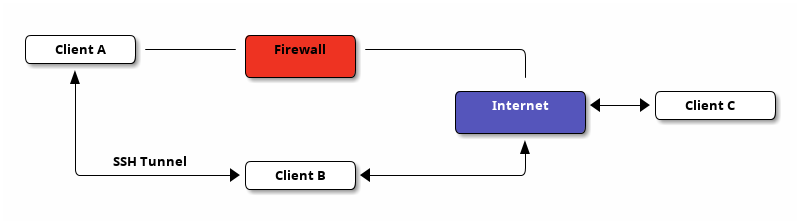

BitTorrent Sync over SSH proxy
Table of Contents
I have switched from BitTorrent Sync to Syncthing. Reasons are:
- the synchronization was not reliable (synchronization stalled sometimes; every update leads to a re-synchronization of all files);
- the corporate policy is not to my liking (a Pro version is available; the free version only supports a limited amount of folders and clients; it is not sure if it will stay free in the future).
Please also refer to the blog entry that describes how to configure Syncthing with SSH port forwarding.
Introduction
BitTorrent Sync is a nice program that lets you sync two clients using advanced peer-to-peer technology. It can be a very good replacement for Dropbox if you do not want to share files with others (although you could still use Dropbox for file sharing with others). Especially so, because it does not save any of your data on a server and synchronization is encrypted. Furthermore, it can be installed very easily on Linux (and even on a Mac and on Windows). Please see the installation instructions on their homepage.
The problem I had is that one of my clients (say client A) is behind a firewall. In order to circumvent it, we need a client B that has full access to the internet and that is accessible by client A; then we ca set up an SSH SOCKS proxy; check it out.

Setup of SSH tunnel
In order for this to work, you need SSH access from client A to client B. Client B needs to have access to the internet. Then you can setup a dynamic SSH tunnel at client A with:
ssh -vvv -N -D 1080 username@clientB
-vvv- Increase verbosity to a high level, so that you can debug problems if you have any (can be removed later).
-N- Do not open an interactive session (no commands can be entered at prompt).
-D 1080- Dynamically forward all requests to
localhost:1080to client B (act as a SOCKS proxy on port 1080; if you are interested please see, e.g., port forwarding).
If this worked out, every process on client A that accesses
localhost:1080 will be forwarded to client B that is outside the
firewall. I.e., you could also tell Firefox to use this SOCKS proxy
so that you can access sites that you cannot otherwise. Actually this
is a very good idea to test if the SOCKS proxy works in general.
BTSync setup
Now, BTSync should automatically find this SOCKS proxy (because it is
using the standard port 1080; my BTSync version is 1.4.106) and uses
it to circumvent the firewall. The very good and informative debug
output of the SSH tunnel can be used to identify possible problems. A
sample configuration file looks like this:
The automatic detection of the SOCKS proxy did not
work anymore (BTSync version 2.0.93). I have adjusted the
configuration file below.
{
"device_name" : "username@clientA",
"listening_port" : 0, // 0 - randomize port.
/* The storage_path dir contains auxilliary app files if no
storage_path field: .sync dir created in the directory where binary
is located. otherwise user-defined directory will be used. */
"storage_path" : "/home/username/.btsync",
// Set location of pid file.
"pid_file" : "/home/username/.btsync/btsync.pid",
// Do not use UPnP for port mapping.
"use_upnp" : false,
// limits in kB/s. 0 - no limit.
"download_limit" : 0,
"upload_limit" : 0,
// Proxy configuration
"proxy_type" : "socks4", // Valid types: "socks4", "socks5", "http_connect". Any other value means no proxy
"proxy_addr" : "127.0.0.1", // IP address of proxy server.
"proxy_port" : 1080,
// Do not use the webui.
"webui" :
{
"listen" : "0.0.0.0:8889"
},
/* !!! If you set shared folders in config file WebUI will be
DISABLED !!! Shared directories specified in config file override
the folders previously added from WebUI. */
"shared_folders" :
[
{
"secret" : "MYSECRET", // required field - use --generate-secret in command line to create new secret
"dir" : "/home/username/BTSync", // * required field
"use_relay_server" : true, // use relay server when direct connection fails
"use_tracker" : true,
"use_dht" : false,
"search_lan" : true,
"use_sync_trash" : true, // enable SyncArchive to store files deleted on remote devices
"overwrite_changes" : false, // restore modified files to original version, ONLY for Read-Only folders
"known_hosts" : // specify hosts to attempt connection without additional search
[
]
}
]
}